Comment ajouter des glyphes à une fonte
Vous pouvez vouloir ajouter des glyphes manquants à une fonte et il y a de bonnes raisons à cela, voir le chapitre « Intentions et attentions ». Plusieurs possibilités s'offrent à vous :
- transformer un glyphe existant ;
- ajouter un caractère diacritique, comme un accent, grâce au système des références internes de FontForge ;
- ajouter plusieurs caractères diacritiques grâce au système des ancres qu'offre le standard Unicode (présenté au chapitre « Créer une fonte »).
Transformer un glyphe existant
Vous cherchez à créer le ǝ. Ce caractère est nommé en Unicode LATIN SMALL LETTER TURNED E et la valeur U+01DD, du bloc Latin Extended-B1, dont la majuscule est Ǝ. Cette lettre est utilisée dans l'alphabet pan-nigerian et dans nombre de langues de l'Afrique de l'Ouest et correspond en moré au son e muet français, sans être muet, justement (peut-être dans la même mesure que ses locuteurs arrêtent d'être muets devant son absence dans la plupart des fontes à travers le présent manuel)... Ne pas le confondre avec le ə (U+0259) phonétique qui est souvent dessiné de la même manière mais dont l'usage et la majuscule Ə n'ont rien à voir.
Pour le dessin de ce glyphe, vous pouvez élaborer une opération de miroir sur base du glyphe e existant. Depuis la fenêtre de fonte, sélectionnez le e et copiez-le.

Puis Vue > Aller au glyphe, tapez U+01DD.

FontForge vous amène sur le glyphe en question, collez le contenu du presse papier.

Double-cliquez sur le glyphe, observez un instant le léger décentrage de son dessin, 62 unités du côté bombé de la panse, 50 unités du côté ouvert, de manière à équilibrer optiquement le glyphe. Dans un élan plus pratique, choisissez Vue > Show > Palettes > Palettes verrouillées pour ancrer les deux palettes d'outils et de calques à l'intérieur de la fenêtre de glyphes.
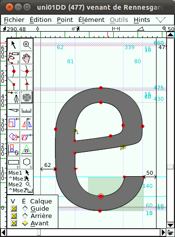
Lancez une rotation à 180° avec Éléments > Transformations > Transformer, puis Centre de la sélection et Pivoter à 180° dans n'importe quel sens. >
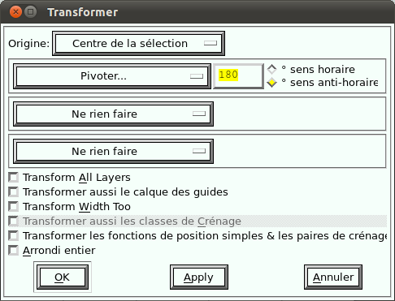
Le glyphe est maintenant retourné dans le sens voulu.
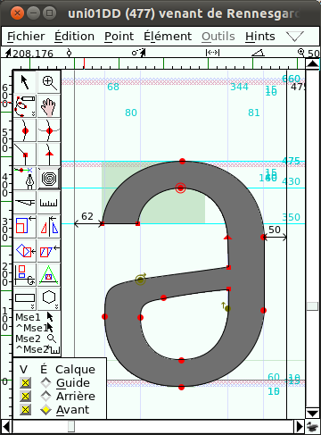
Mais les approches gauche et droite n'ont pas été retournées, il est donc nécessaire de déplacer le tracé de -12 unités, par exemple avec Éléments > Transformations > Transformer et Déplacer.
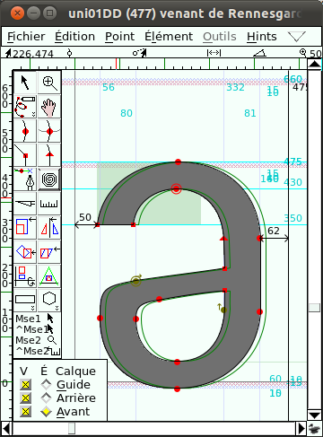
Notre glyphe est prêt. Plus complexe maintenant : pour l'exercice, tentez le ƴ (U+01b4).
Ajouter un caractère diacritique
Nouveau chantier, l'ajout de caractères diacritiques, comme les accents, sur des glyphes existants permettent de couvrir une partie importante des besoins en glyphes manquants. Commencez par un cas simple en ajoutant un accent aigu ´ sur le ǝ pour former le glyphe ´ǝ (l'accent est superposé au ǝ, l'assemblage n'est justement pas encore accessible par la fonte que le navigateur utilise pour afficher les mots que vous lisez...!). En moré, cet accent aigu indique un ton montant.
Le glyphe est manquant dans le codage Unicode, et donc il n'existe pas de case pré-existante pour lui dans FontForge. Commencez donc par ajouter une case d'encodage avec Codage > Ajouter des cases de codage.

La nouvelle case de glyphe, encore vide, se créé tout au bout de la fenêtre de fonte, derrière la grande quantité de glyphes alternatifs que Loïc a dessiné. Chacun de ces glyphes est surmonté de son nom Unicode, tous inexistants ici, et représentés par ?.
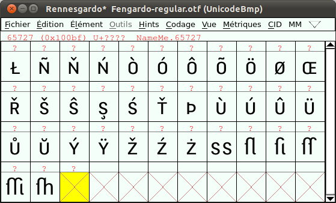
Vous voulez y placer pour commencer le ǝ nouvellement créé. Un copier/coller du glyphe depuis la fenêtre de fonte (Vue > Aller au glyphe avec U+01DD parce que le tableau est long) semble être la méthode la plus simple, mais nous allons l'éviter parce que beaucoup trop lourde à maintenir et à partager avec d'autres sur le plus long terme quand des dizaines ou des centaines de glyphes sont concernés.
À la place, nous allons copier la référence du glyphe, avec le menu contextuel (clic droit ou clic + touche [Ctrl]) et Copier référence.
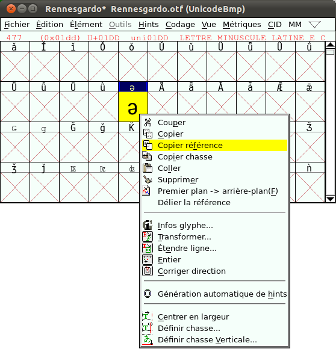
Puis nous collons cette référence avec Édition > Coller.
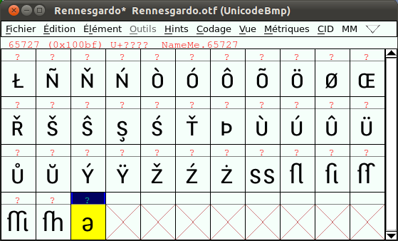
Double-cliquez pour afficher la fenêtre de glyphe, et sélectionnez le glyphe : un cadre s'affiche, à la place des points d'ancrage, et le code Unicode du glyphe qui est référencé s'affiche au-dessus.
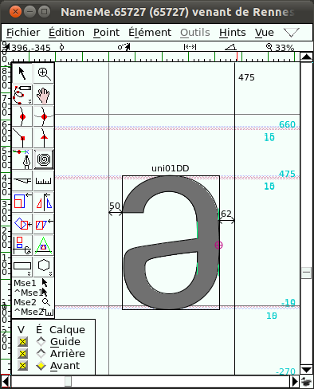
Parmi les avantages de ce mode de travail, il y a le lien dynamique qui existe entre l'original et sa référence. Essayez-le : ouvrez-le et modifiez le ǝ original, puis revenez à la référence, et constatez qu'elle a suivi. Puis vous pouvez annuler ce test avec Édition > Annuler.
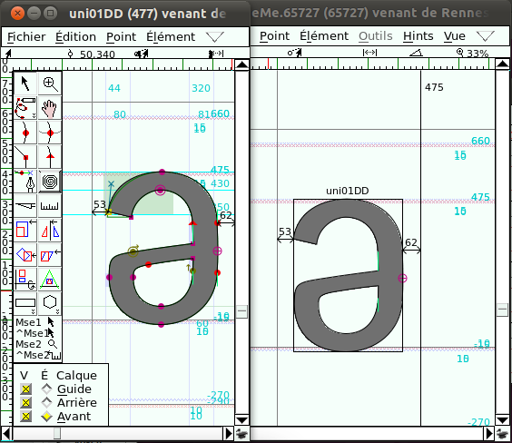
Baladez-vous quelques instants dans la fenêtre de fonte, et ouvrez par exemple le é. Dans une fonte faite de référence, on devrait y retrouver 2 références, la lettre e et l'accent aigu. Ici, le glyphe est dessiné par trois tracés, deux pour le e, un pour l'accent, décomposés comme on les appelle parfois.
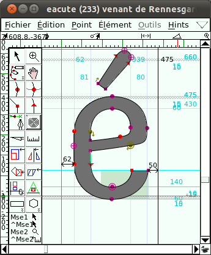
Comme dans bon nombre de cas, les sources complètes d'une fonte ne sont pas disponibles, et dans le cas du Fengardo, son auteur, n'a pas trouvé utile ou souhaitable de nous transmettre son ou ses fichiers sources, sans doute produits via FontLab, le principal éditeur de fonte sous licence privative. Les raisons de ce choix sont propres à Loïc, donc bien sûr légitimes, et nous ne voudrons pas généraliser ici outre mesure, mais grâce à l'opportunité de l'écriture de cette ou, nous (les co-auteurs) nous rendons de plus en plus compte qu'il est difficile pour les typographes occidentaux, dont certains d'entre nous font partie, d'appréhender immédiatement les conséquences de tel ou tel choix apparemment technique. Nous supposons par le nombre de diacritiques présents dans la fonte, les glyphes ont été élaborés en mode référencé présents dans ce fichier source, puis déreliés lors de la génération de la fonte sous format .otf.
Ces notions sont complexes, en interconnexions de plusieurs domaines techniques, très récentes et donc encore largement incomplètes. Nous allons donc tenter de tracer des sentiers pour contourner les nombreuses difficultés encore présentes pour quelques années.
Reprenons, et essayez maintenant de composer et commencez par chercher le premier accent aigu dans la table Unicode représentée par la fenêtre de fonte, ou utilisez Vue > Aller au glyphe et tapez acute qui veut dire aigu en anglais, la langue de travail du Consortium Unicode.
Il est cependant intéressant de noter plusieurs documents officiels issus du travail de standardisation du consortium Unicode sont désormais disponibles en français en plus de l'anglais via la section française du site web d'Unicode.2
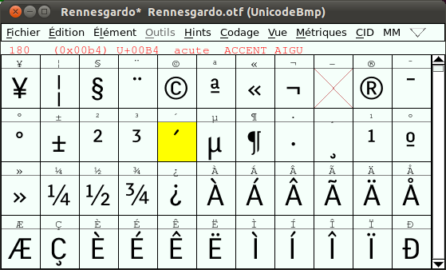
Copiez la référence de ce glyphe avec Édition > Copier la référence, retournez vers la fenêtre de glyphe à créer et collez cette référence. La référence de l'accent arrive positionnée selon ses métriques d'origine. Ce positionnement initial est souvent relativement satisfaisant. Dans le cas présent, déplacez-le peut-être de quelques unités vers la droite.
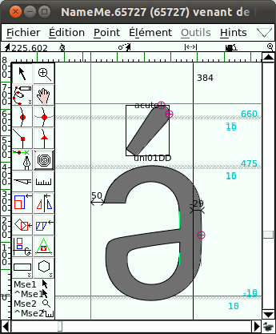
Mais que remarquer à propos des métriques ? L'approche droite est maintenant négative ! Elle a hérité de l'ensemble des métriques de l'accent ! Il convient donc de faire l'opération dans l'autre sens. Ou bien, de pointer le glyphe principal ǝ dans la fenêtre de fonte, de cliquer-droit > Copier la chasse et de coller cette chasse correcte sur le nouveau glyphe avec Édition > Coller.
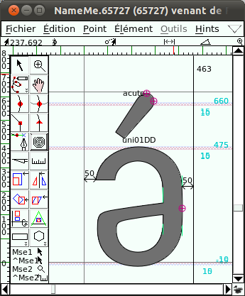
Notre glyphe est maintenant créé. Hop! Pour le tester en situation réelle, il semble suffire de générer la fonte, voir chapitre « Comment créer une fonte ». Mais une série de notions sont d'abord à prendre en compte.
Comment utiliser la fonte encore à générer?
Car une fois le fichier de fonte généré, comment accéder à ce nouveau glyphe à partir d'un logiciel de traitement de texte, de graphisme, de mise en page, et même dans un navigateur ? Malheureusement, cette question n'a pas de réponse simple !
Plongeons malgré tout ! Si on simplifie grossièrement, il y a plusieurs acteurs en présence :
- la chaîne de caractères (le texte) qui est à afficher ou mettre en page ;
- le codage des caractères dans un ou plusieurs systèmes d'écriture ;
- la fonte (collection de glyphes) ;
- le moteur de composition (partagé de manière variable entre systèmes d'exploitation, moteur de rendu et application) ;
Selon ce schéma, c'est 5. le clavier qui envoie des instructions permettant au système d'exploitation de construire la chaîne de caractère.
1. La chaîne de caractère
Le texte est le vecteur de sens, qui va dépendre de tous les autres acteurs pour maintenir ses constituantes propres les plus diverses.
2. Le codage
Le codage est matière complexe, mais étonnement passionnante. Quand Unicode a démarré ses activités titanesques d'unification des codages, le Consortium, après de nombreux débats riche en complexité technique et culturelle, a décidé d'intégrer un nombre très important de codages pré-existants même s'ils comportaient nombres de paradoxes, ambiguïtés ou même absurdités. Ce choix a entre autres été guidé par le besoin de permettre la moins mauvaise rétro-compatibilité avec les systèmes antérieurs. Dans la grande majorité de ces codages, les glyphes moins simples étaient composés, comme dans par exemple À ou dž ou ئ, ce qui veut dire qu'une case de codage était réservée pour le(s) glyphe(s) principal(aux) et le(s) diacritique(s), sous une forme fixe. Dans ce mode, la chaîne texte - codage - fonte - moteur de composition est assez simple à faire fonctionner.
Mais pour répondre à la magnifique et incroyable complexité des milliers de langues et de systèmes d'écriture existant et ayant existé sur Terre, des systèmes décomposés ont été imaginés, nettement plus articulés et en miroir, complexes eux aussi. C'est-à-dire que plutôt que fixer l'assemblage de chaque glyphe, les différents morceaux sont stockés chacun dans sa case de codage, et un système partagé de composition, résidant dans la fonte, le système d'exploitation, le moteur de rendu et/ou dans le logiciel qui compose le texte, va (tenter de) recomposer l'assemblage du glyphe.
Après la phase d'intégration des anciens codages, cette nouvelle voie a été privilégiée, et peu de nouveaux systèmes d'écriture sont encore intégrés sur un mode composé (simple mais épuisant progressivement le nombre de places disponibles) dans Unicode.
3. La fonte
OpenType (OT), le format de fonte qui a intégré la norme Unicode, matérialisé par les fichiers .otf, sert de stockage pour tous les glyphes et les différentes parties (diacritiques) et intègre une partie des systèmes de composition grâce à différentes fonctionnalités (baptisées parfois fonctionnalités OT ou feature OT).
4. Le moteur de composition
Le système d'exploitation reçoit la chaîne de caractère, codée en Unicode, puis le moteur de composition va chercher dans la fonte les éléments dont il a besoin et il les passe selon une forme terminée ou encore en partie à traiter au moteur de rendu et à l'application qui va les afficher.
Si la plupart des systèmes d'exploitation savent maintenant recevoir du texte codé en Unicode et utiliser des fontes OT, tous ne savent pas traiter l'ensemble de la complexité des fonctionnalités OT, ni de la même façon. Les moteurs de rendus et les applications, eux et elles aussi ont un support variable de ces fonctionnalités. Comme tout fonctionne en chaîne, il y a des raisons multiples de trouver un problème à l'une ou l'autre étape.
5. Le clavier
C'est un mode d'entrée particulier qui produit la chaîne de caractère et qui dépend principalement du système d'exploitation.
Difficultés et solutions transitoires
Le support de ces fonctionnalités progresse régulièrement. Mais dans le cas des systèmes d'exploitation, moteur de rendu et applications privatives, ces progressions ne sont documentées que très tard. Et donc une série de systèmes d'écriture, dont bon nombre utilisés dans les langues de l'Afrique de l'Ouest, ne sont pas encore bien, ou même très mal supportés. En ajoutant les questions autour de la saisie au clavier des systèmes d'écriture qui ne disposent pas des leurs, les difficultés deviennent complexes à circonscrire.
Or ces locuteurs sont légitimement impatient de pouvoir utiliser les outils informatiques dans leur système d'écriture pour pouvoir communiquer dans leur langue sans ambiguïtés, freins ni contorsions. Différentes solutions ont donc été développées, Microsoft Word, la suite Adobe CS, Indesign, Keyman, etc font sans doute partie des solutions privatives utilisées, mais c'est maintenant du côté du logiciel libre qu'elles sont en développement les plus actives.
Le système GNU/Linux et ses différents moteurs de rendu sont maintenant largement capables de supporter des scripts complexes et sont parfois les premiers à offrir une prise en charge de certains systèmes d'écriture. Ces avancées sont possibles grâce nottamment aux moteurs de rendu libres Pango et Harfbuzz utilisé par Inkscape et par les navigateurs comme Mozilla Firefox ou Chromium. De même, le moteur de rendu pour script complexe Graphite - qui offre un plus grande flexibilité pour la création de comportements pour les scripts complexes - utilisé par le système de composition XeLatex ou par les derniéres versions de LibreOffice complètent dans une large mesure ce support de manière multiplateforme permet d'accélérer le support de fonctionnalités encore à venir dans le chantier opaque du côté privateur. Il faut cependant souligner que, pour l'instant, Graphite n'est pas encore intégré dans Fontforge et demande une étape supplémentaire de traitement après la génération de la fonte OT, il faut faire appel à des utilitaires séparés (voir http://scripts.sil.org/RenderingGraphite.
Les suites de publications privatrices n'ont qu'à bien se tenir. Voir les chapitre « Outils Complémentaires » ou « Glossaire » pour retrouver ces outils.
En pratique, que faire dans la fonte ?
Deux options se présentent à nous.
-
La méthode composée que nous avons suivie
jusqu'ici présente la manière simple et ancienne de construire les
glyphes avec diacritiques. Sur des chaînes de fabrication qui pour une
raison ou une autre bloquent une composition OT complète avec une fonte
décomposée, cette solution reste valable, quoique obsolète à moyen
terme. Pour pouvoir accéder à notre glyphe depuis une application une
fois la fonte chargée, nous devons le déplacer vers une case de codage
définie dans l'Unicode, même si notre glyphe ne fait pas partie du
codage Unicode (et n'en fera sans doute jamais partie sous cette forme).
Nous créons alors un usage particulier de ce codage censé être
l'inverse, universel. Donc pour éviter autant que possible de rentrer en
collision avec un autre glyphe, nous allons utiliser quelques cases de
codage dans la zone grise qui s'appelle la Private Use Area qui en
prévoit environ 6400. Après avoir consulté quelques sources (http://en.wikipedia.org/wiki/Private_Use_Area#Private_use_characters, http://scripts.sil.org/cms/scripts/page.php?&item_id=VendorUseOfPUA, http://www.evertype.com/standards/csur/), il semble que la série comprise entre U+E83C et U+E89F n'est pas, ou très peu, utilisée.
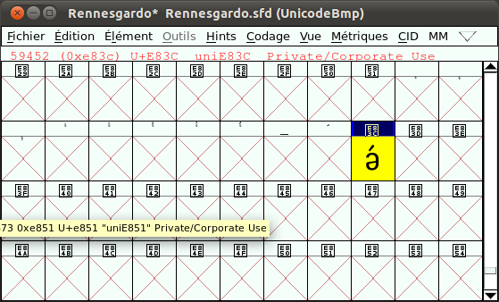
Coupez-collez donc le glyphe vers la case U+E83C. Et après avoir changé son nom dans le Infos fonte, générez la fonte et testé le glyphe dans un des outils précités, en pointant le nouveau glyphe.
- La méthode décomposée va être abordée dans un autre chapitre.